【体验报告】UOS一日体验报告及排坑日记
在数码爱好者都在热火朝天的升级 Windows11 的时候，我选择了拥抱一款国产 linux 发行版： 统信 UOS。
这里做一个简单的体验报告，并分享一些使用过程中遇到的坑，以及简易排坑方法。
# 1. 安装篇
系统安装过程 2 个坑
(1) 截止到 2021 年 10 月 10 日，UOS 体验工具和云旗 OS 助手都不能一键安装和 Windows 共存的 UOS 体验版系统了，大家不要浪费时间尝试
(2) UOS 手动安装时，需要至少选择 3 个分区，EFI，BOOT，SWAP。缺少其中任意一个分区可能导致安装过程卡在 50% 或者 63% 的位置
# 2. 系统篇
美观度，满分。我个人非常喜欢 UOS 20 目前的设计语言，兼顾了美观和高效。提供了两种菜单模式，个人比较喜欢简洁模式。
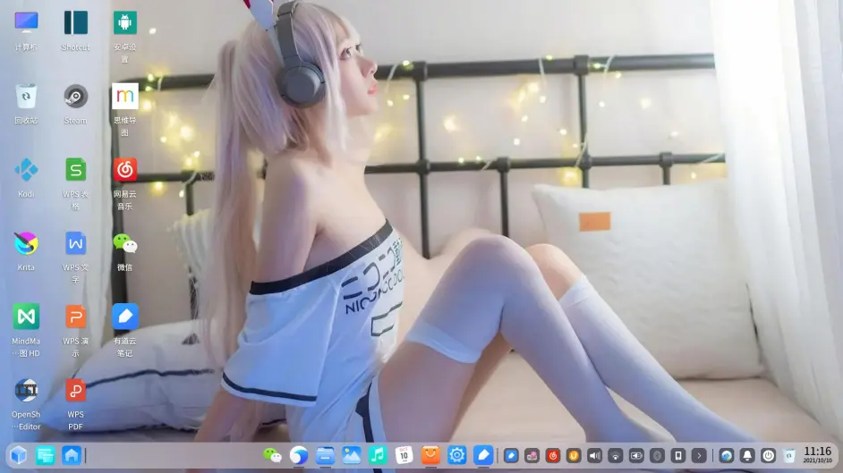
简洁模式
高效模式
流畅度高，在我的电脑上，流畅度排序是 Win10 LTSC>UOS20>Win11。
资源占用很恐怖的低。在微信以 wine 容器运行的时候，CPU 占用依旧会降低到 10% 左右。
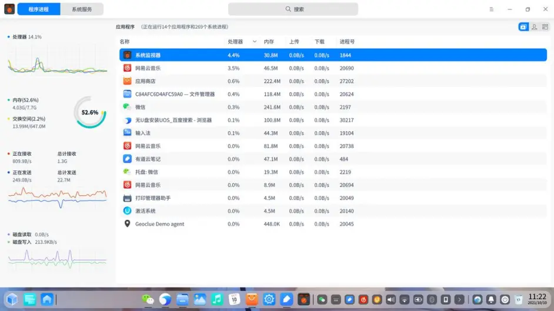
超低的系统占用
文件管理方便简洁高效。支持 SMB 映射，支持和手机联动。使用 UOS 助手可以快速实现安卓手机和电脑的文件传输。
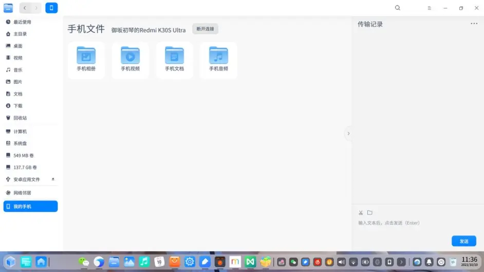
手机助手，用来传文件和文字
# 3. 软件适配篇
自带了 wine 和 uengine，可以兼容一部分 windows 程序和安卓应用。
安装任意安卓应用方法：
使用一款叫 uengine.runner 的软件可以安装任意安卓安装包到电脑。
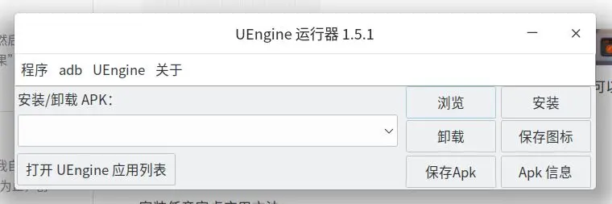
apk 安装工具
使用一段叫 start_uengine_UI_V2.sh 的脚本可以在桌面上创建安卓模拟器的设置的快捷方式。在其中的显示中选择大，并把字号也调大即可。
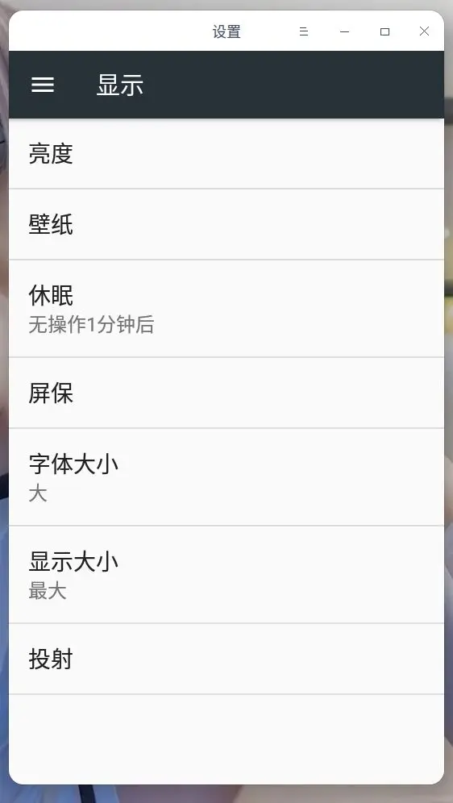
安卓模拟器的设置界面
目前 exe 文件无法双击直接调用 wine 运行，这和中兴的新支点系统，以及 Deepin 社区版有较大区别。
# 4. 软件推荐篇
# (1) 沟通篇
QQ 和微信都有 wine 版本，目前使用并没有发现 BUG。
钉钉有，不知道什么版本。
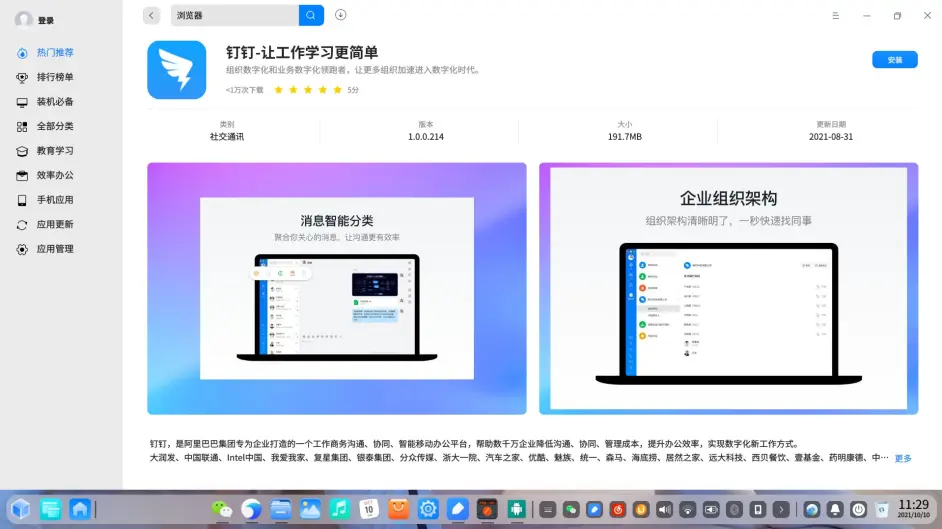
钉钉，有人需要
# (2) 办公篇
WPS 三件套在 Linux 上的适配非常完美，体验也很好。
脑图方面，有 Xmind，有兼容版的 MindMaster。
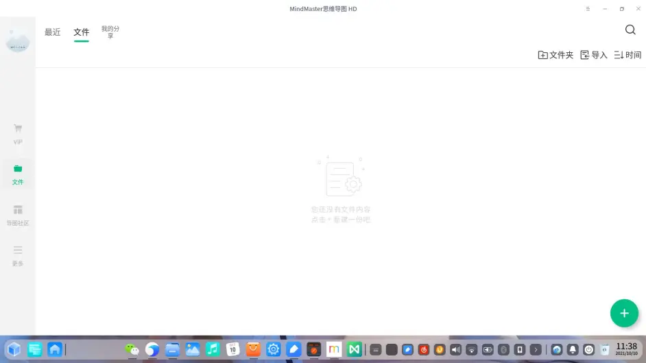
MindMaster
其他办公需求暂未实验。
# (3) 专业篇
Krita 依旧是最好用的修图软件 (我个人不喜欢 GIMP)。
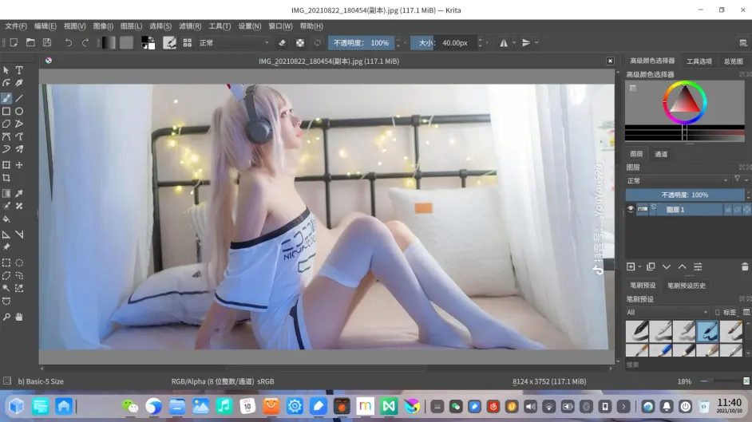
Krita，我推荐过好多次了
Krita 的汉化方法：在桌面上打开终端，敲入 sudo apt install krita-l10n
CAD 专业绘图，中望 CAD 已经原生支持 linux 了，性能大幅提升。还有浩辰 CAD 等其他一众选择：
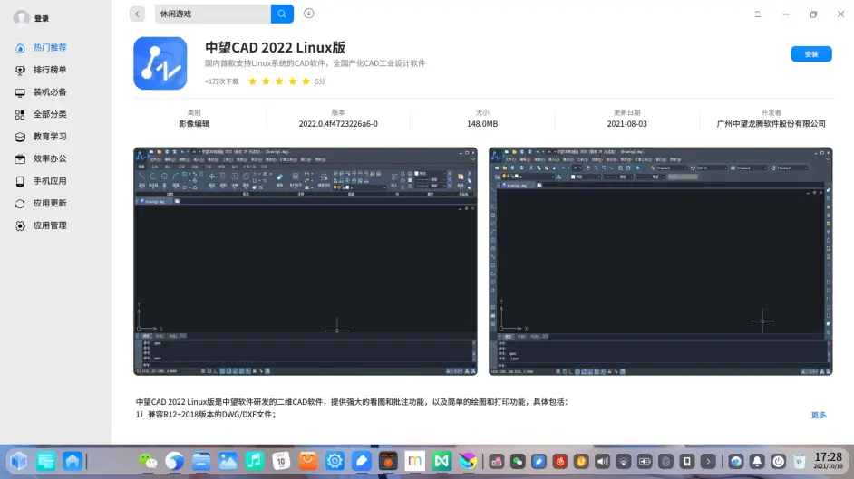
中望兼容性更好
EDA 软件，立创 EDA，兼容 Altium Designer，是学生阶段使用的 EDA 工程软件：
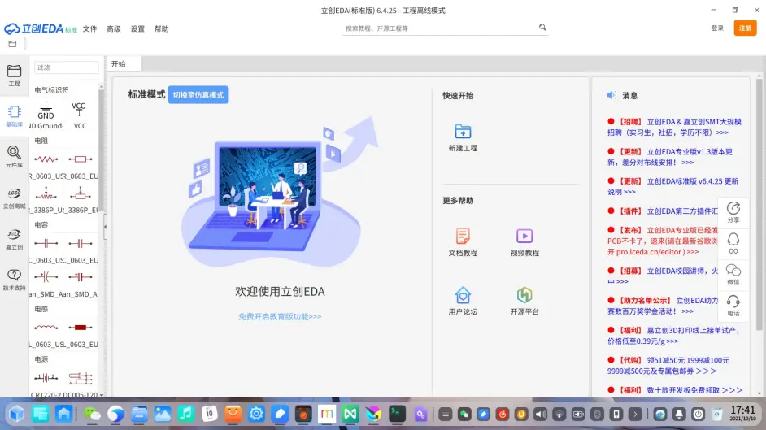
研究生时没少用这玩意
Cadence，专业级别的原理图和 EDA 设计软件。很多大公司的工程软件。这里就不附图了。
音频剪辑：Audacity，简单好用的音频剪辑软件。支持 VST 插件。
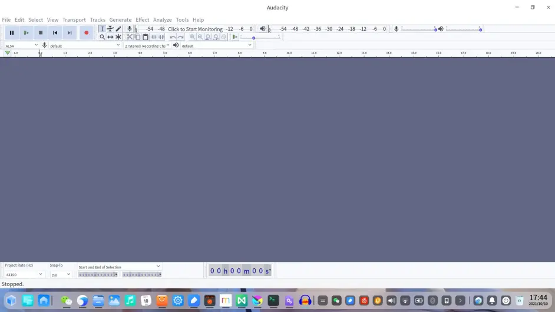
Audacity
视频剪辑：Openshot/Shotcut，自由的剪辑工具。支持 3D 对象，和复杂动画。
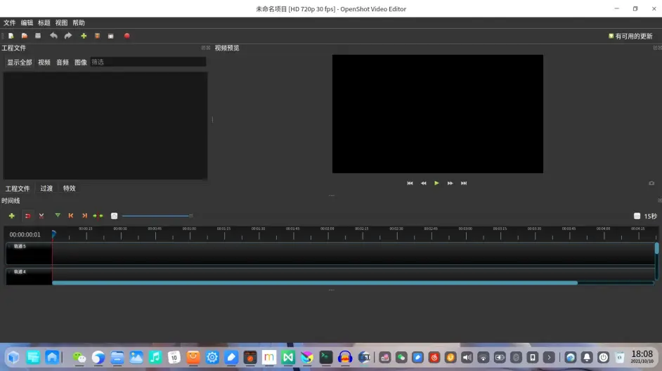
 OpenShot，好用还免费，在公司我就用这个
OpenShot，好用还免费，在公司我就用这个
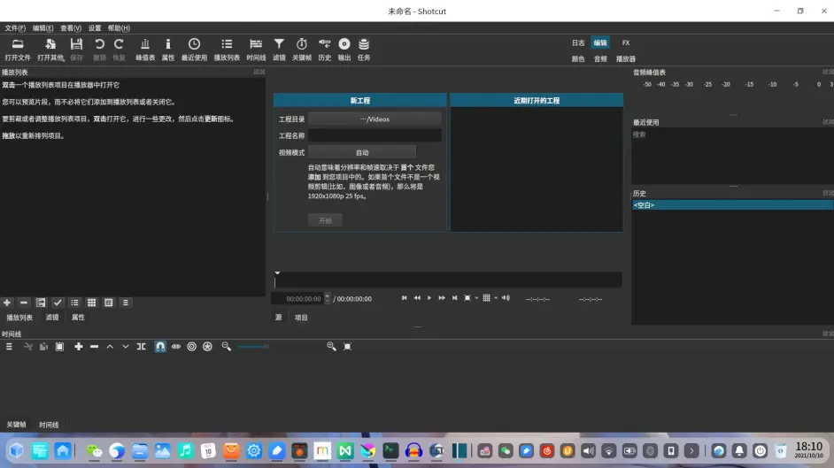
Shotcut，功能更多，支持硬件加速
# (4) 影音娱乐
Kodi 依旧是最好用的本地影音娱乐中心，支持本地电影，电视，游戏等功能
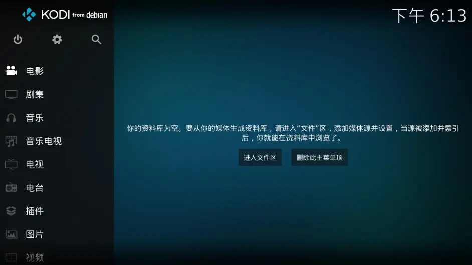
Kodi 功能非常丰富
哔哩哔哩，腾讯视频，爱奇艺等可以安装安卓平板版或者 TV 版
哔哩哔哩
网易云和 QQ 音乐都有原生版，没有任何广告，非常好用。酷狗音乐只有 wine 版
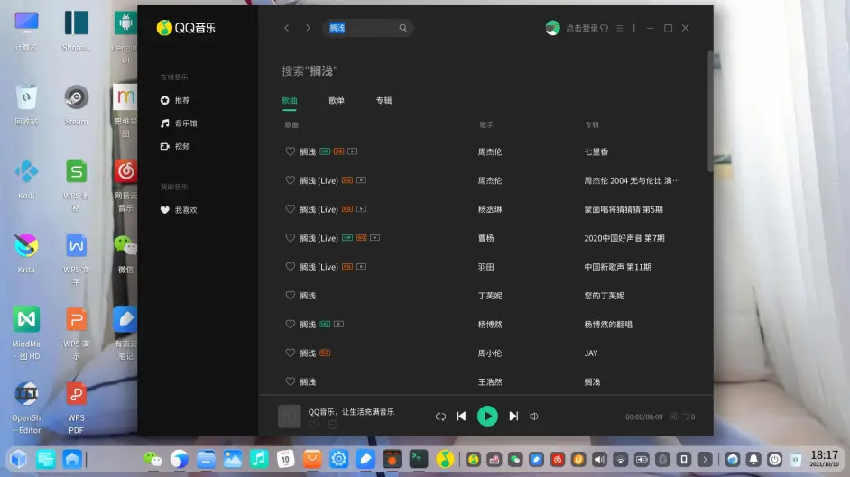
QQ 音乐
# (5) 游戏篇
原生 linux 游戏商店 Steam，内有大量游戏可玩。多玩单机有利于提升一个人的游戏品味。
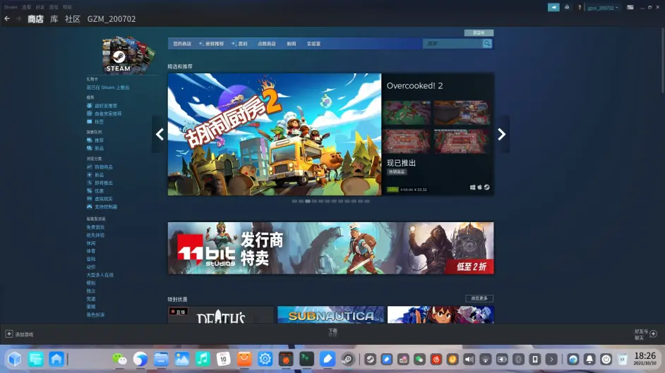
Steam
安卓兼容的游戏测试了指尖帝国和命运之戒，两个都不能正常运行。
# 总结
兼容手机软件是操作系统快速扩充生态的一条捷径。Deepin，UOS，中标麒麟等一众系统在 2018 年起，陆续加入了集成的安卓虚拟机，而苹果 MAC 也在去年加入了对 iOS 的兼容。无论是华为移动应用引擎，还是 Win11 兼容安卓软件，这都是必然，也是一次顺应时代的改变。
而 UOS，作为 Deepin 的商用版，其稳定性有了更好的保证，而功能性又有 Deepin 撑腰，自然会成为国产 linux 发行版中最好用的一个。
linux 作为开源免费系统，我们有能力做到对其代码的完全理解和自主可控。而基于 linux 的桌面系统，一直处于全球 linux 讨论的热门地位。
如果想做成一款面向普通人使用的系统，那就一定要抛弃工程师的傲气以及对 linux 的 “优越感”，丢掉 “不用命令行还叫用 linux 吗” 这种无聊的想法。不断优化交互体验，降低入门门槛。无需悲观的认为 linux 的图形化之路不会成功，毕竟 windows 也是从当年的命令行系统发展成现在这个样子。而我个人认为，在用户交互这一方面，Deepin 和 UOS 确实做到了优秀的品质，不愧曾是 linux 系统热度榜榜首。
整个 1 天的试用过程中，仅遇到 2,3 款软件需要命令行安装。
UOS 现在最大的问题依旧是扩大生态。我认为有 3 个方向可以考虑：
1. 鼓励国内软件厂商使用 python go java 来开发类似 Krita 一样适用于全平台的应用软件，逐渐放弃使用.net 一类仅面向 windows 平台的编程语言。这将会极大的丰富 linux 的原生软件；
2. 鼓励国内厂商开发面向平板的 HD 软件，并大量兼容到 UOS；
3. 鼓励国内厂商开发国产的专业工程软件，对抗国外相关软件的垄断优势。
最后，对于 UOS 使用中遇到的问题，可以在 UOS 和 Deepin 的论坛寻找提问。大部分问题很容易找到答案。
本月出差，会全程使用此笔记本。一个月以后，我会考虑再更新一月体验报告。
各位可以先点关注，我们下篇图文再见。